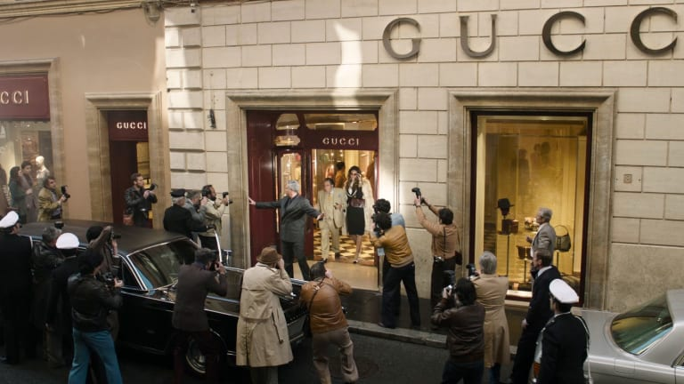
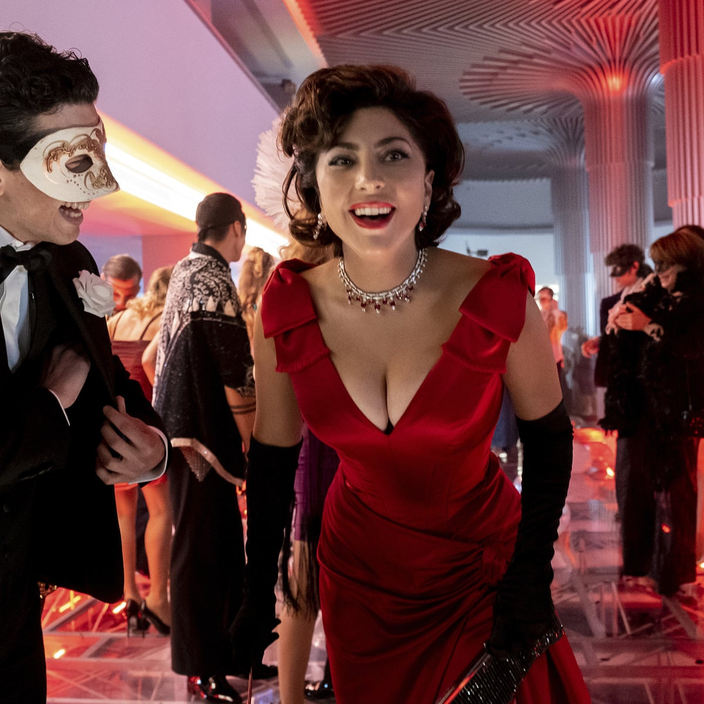
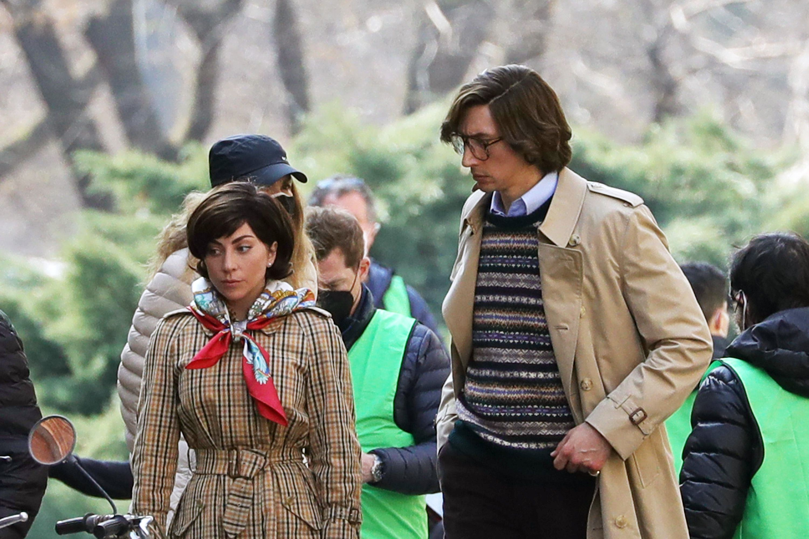
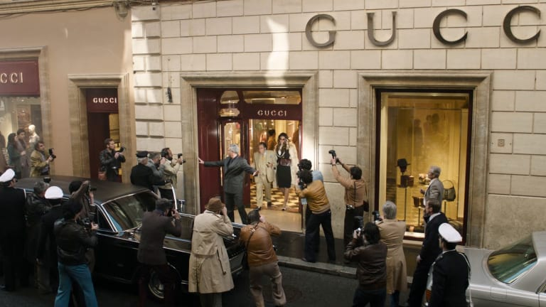
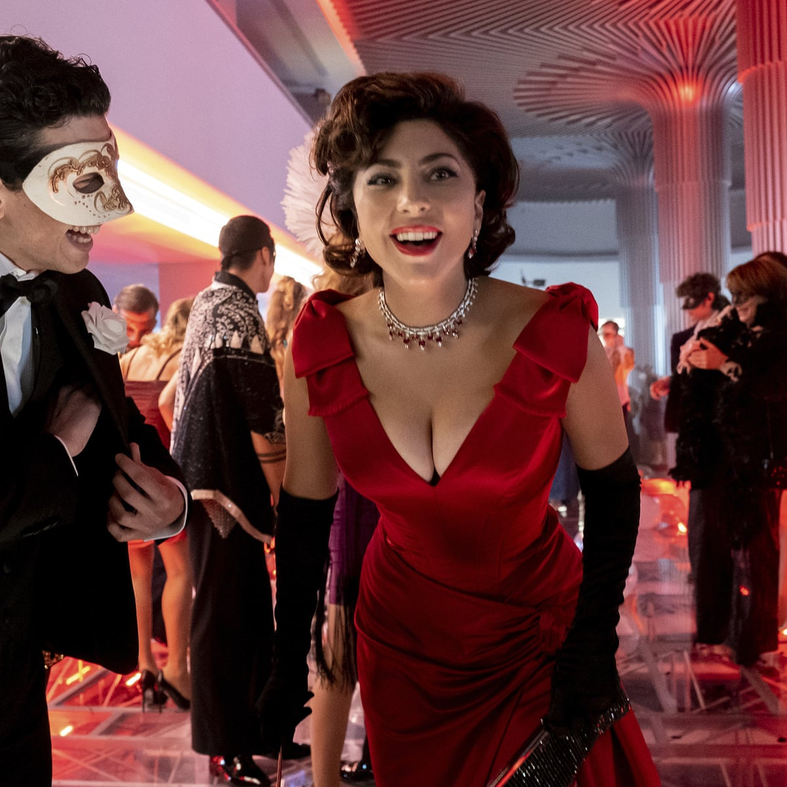
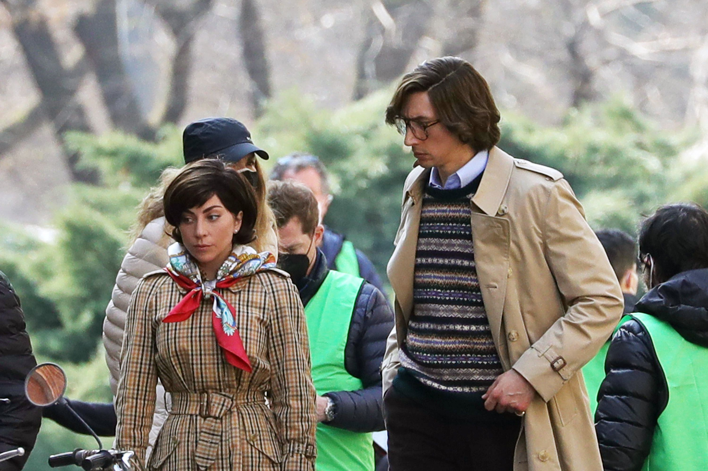

NOW SHOWING MOVIES
 





TITLE: HOUSE OF GUCCI
STARRING: Lady Gaga Adam Driver Jared Leto Jeremy Irons Salma Hayek Al Pacino
Age:14
In 1978, Patrizia Reggiani is a young, attractive Italian woman working as an office manager within her father's small trucking firm. At a party, Patrizia meets Maurizio Gucci, a law student and heir to a 50% interest in the Gucci fashion house through his father Rodolfo. Patrizia aggressively pursues the awkward Maurizio, charming him into love. Rodolfo warns Maurizio that Patrizia is only after wealth and tells Maurizio that he will disinherit him if he marries Patrizia; Maurizio chooses Patrizia over his connection to Gucci, leaving the family. Patrizia and Maurizio marry, and Maurizio takes a job at the Reggiani trucking company. When Patrizia becomes pregnant, she sees her child as an avenue for familial reconciliation. She lets it slip to Maurizio's uncle Aldo that she is pregnant; Aldo is delighted by the news and takes the couple under his wing. Aldo introduces Patrizia to his unintelligent son Paolo, who aspires to be a designer within Gucci despite his lack of talent. Thanks to Aldo, Maurizio and a terminally ill Rodolfo reconcile shortly before the latter's death. Rodolfo writes Maurizio back into his will, but fails to sign a document transferring the Gucci shares to him before he dies. Patrizia fakes Rodolfo's signature, giving Maurizio a 50% interest in Gucci. Patrizia starts to devise a plot to obtain a controlling interest in Gucci by acquiring some of Aldo and Paolo's shares (the two hold the other 50% interest). She clashes with Aldo over the firm's clandestine sale of cheap "fake" Gucci products on the black market, and begins to consult Giuseppina "Pina", a psychic, for guidance. She manipulates Maurizio, who has little real interest in Gucci, into taking a more active role within the company. Paolo acquires proof that Aldo has been evading taxes in the United States; he gives the proof to Patrizia in exchange for her promise that he will be allowed to design his own line. Aldo is arrested by the IRS and sentenced to a year and a day in prison. Patrizia lies to the Italian police and tells them that Paolo is not authorized to use the Gucci trademark; the police stop the fashion show by force. Patrizia and Maurizio ask Paolo to sell them his shares, but he rebuffs them and cuts ties between them.